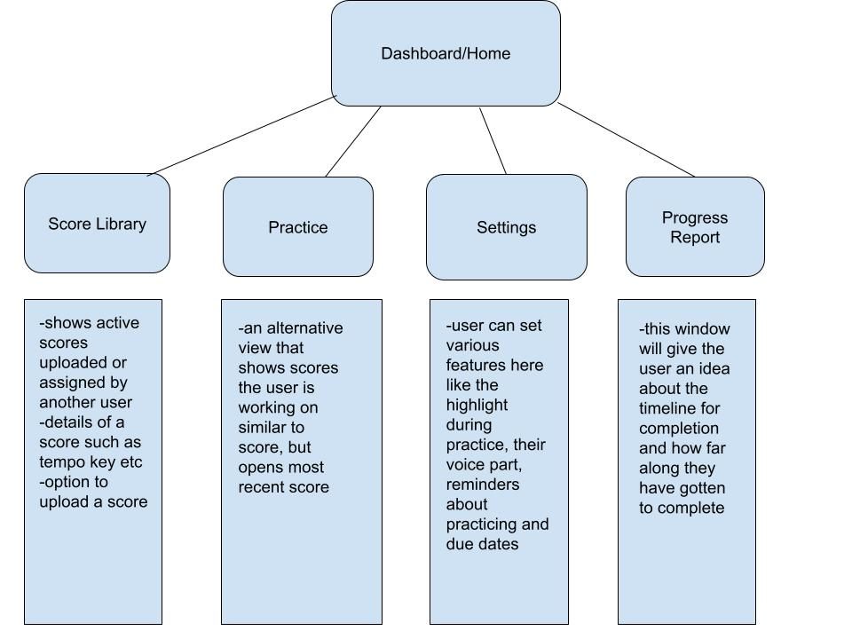
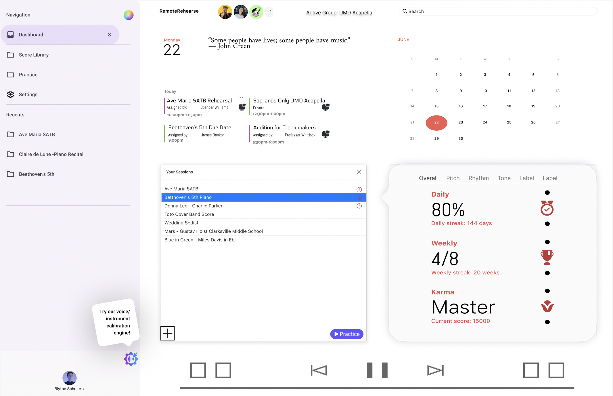

Remote Rehearse is a virtual rehearsal hub that enables musicians to practice assigned or uploaded scores online, track their progress, and receive feedback from directors. It supports flexible practice and measurable improvement.
Planned features include a score library, voice part selection for SATB, a practice mode with a transport bar and mute or solo options, a scoring system that provides feedback on pitch and rhythm alignment, a dashboard for goals and upcoming rehearsals, and director tools for assignment and monitoring. A future enhancement includes integration with the Zoom API for live virtual rehearsals, where MIDI playback is gradually replaced with recorded parts as users improve.
Home/Dashboard, Score Library, Practice, Settings, Progress Report.
Homepage design
A tutorial on client-side audio playback and analysis using the Web Audio API will guide development of the practice player and metering. The reference will inform on transport controls, gain nodes for mute or solo, and timing cues for score-synced playback. It will also help structure a minimal scoring prototype later. Many tutorials are available on Youtube.